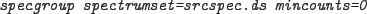

XMM-Newton Science Analysis System
specgroup (specgroup-1.6) [xmmsas_20170112_1337-16.0.0]
The command:

will have the following behaviour:
- Channels defined as bad for that instrument in the corresponding
XMM_SPECQUAL CCF will be set BAD.
- All keywords, ANCRFILE, BACKFILE, RESPFILE, will be set to "NONE"
- The data will be grouped such that each input channel is in a group
of its own
To set the channels bad and leave the data ungrouped use the command:

XMM-Newton SOC/SSC -- 2017-01-12